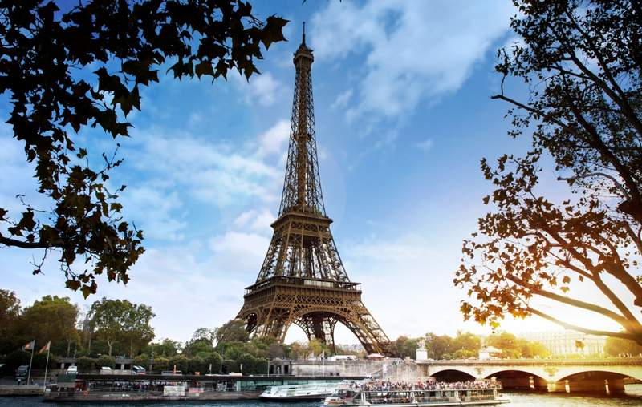
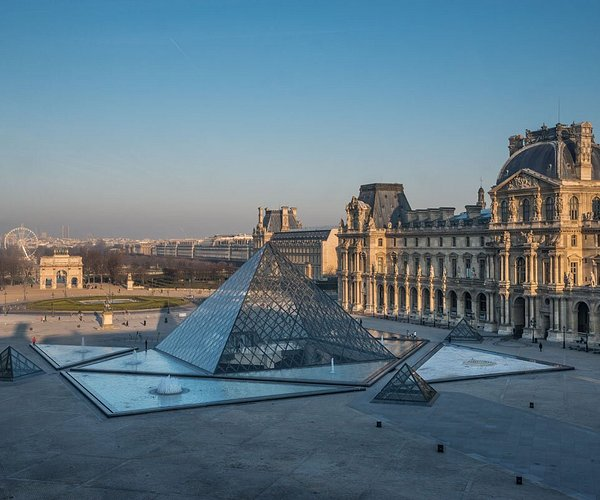
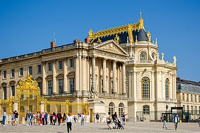

法国人经常吃蜗牛，通常与酱料搭配，会使整顿饭都美味不少！
回到目录建筑特点
建筑外形丰富而独特，形体厚重，贵族气息在建筑的冷静克制中优雅的散发出来。
法式建筑风格大概分为三种：法式风格、古堡风格、古典主义风格。
法式风格
法式风格，指的是法兰西国家的建筑和家具风格。
法式风格建筑讲究点缀在自然中，并不在乎占地面积大小，追求色彩和内在联系，让人感到有很大的活动空间。
不过，有时也有意呈现建筑与周围环境的冲突。因此，法式风格建筑往往不求简单的协调，而是崇尚冲突之美。
在设计上讲求心灵的自然回归感，给人一种扑面而来的浓郁气息。
法式风格还有一个特点是既对建筑的整体方面有严格的把握，又比较善于在细节的雕琢上下功夫。
建筑造型上多采用对称造型，屋顶上一般都会有精致的老虎窗。外立面色彩典雅清新。
法式风格的主要特点
•布局上突出轴线的对称
•贵族风格，高贵典雅
•工艺精细考究
•点缀在自然中，崇尚冲突之美
古堡风格
古堡风格源于法国16世纪古城堡建筑。将早期哥特风格和文艺复兴装饰融为一体。
古堡风格建筑大多由石块堆砌而成，内部装饰及其昂贵，故数量不多。
古堡风格的主要特点
•哥特式装饰
•高而陡的四坡顶，顶上开有若干老虎窗，并延伸到墙面
•石墙，携带塔楼
古典主义风格
十七世纪到十八世纪初是法国专制王权极盛时期，人们开始竭力崇尚古典主义建筑风格，建造了很多古典主义风格的建筑。
法国古典主义建筑的代表作品有巴黎卢浮宫的东立面、凡尔赛宫和巴黎伤兵院新教堂等。
凡尔赛宫不仅创立了宫殿的新形制，而且在规划设计和造园艺术上都为当时欧洲各国所效法。
规模巨大、造型雄伟的宫廷建筑和纪念性的广场建筑群是法国古典主义建筑的代表作。
古典主义的主要特点
•立面面喂标准的古典主义三段式
•设置2-3层高的穹窿
•布局突出轴线对称，气势恢宏
•普遍应用古典柱式，内部装饰丰富多彩
最佳旅游时间

法国旅游的最佳时间是4月到6月，以及9月到11月。
这些月份的人流较少，而且相对于炎热的夏季来说天气温和。
滑雪

可以在12月到来年4月上旬之间的任何时候去滑雪。
注意事项
建议避开7月中旬到8月底这段繁忙的节假日时期。
许多商业门店在这段时间都会关门避暑，公共交通也会受到影响。
葡萄酒品酒会


可以前往波尔多和勃艮第,这两个地点是法国著名的旅游胜地。
3月至5月之间前往可以欣赏到美丽的风景，或在10月至11月前往，则赶上葡萄丰收季。
旅游开销
住宿及机票
去法国旅游10天大概要2万到3万左右，去法国往返机票RM3000-4000左右，
淡季的机票会便宜一些，好一些的酒店一晚大概Rm500-750一晚，经济一点的要RM300-400左右一晚
餐饮开销
在法國旅行，品尝当地美食是一個不可或缺的体验。
下面是几个主要城市的餐饮費用参考：
巴黎：早餐 RM20 起，午餐 RM40 起，晚餐 RM80 起，咖啡店 RM15 起
请注意，这些价格仅供参考，实际价格可能因餐厅类型、位置和季节而有所不同。
另外，一些较为昂贵的餐厅可能需要预订。建议您在旅行前查看餐厅评论和菜单，以便进行预算和计划。
生活用品物价
| 一瓶水（500毫升） | 约RM4-6 |
|---|---|
| 一杯咖啡 | 约RM15-20 |
| 一份面包 | 约RM5-10 |
| 一份薯条 | 约RM10-15 |
| 一杯啤酒 | 约RM18-25 |
| 一件T恤 | 约RM50-100 |
旅游景点
埃菲尔铁塔
埃菲尔铁塔（法语：La Tour Eiffel；英语：the Eiffel Tower），
矗立在法国巴黎市战神广场上，旁靠塞纳河，为举行1889年世界博览会，
用以庆祝法国大革命胜利100周年，法国政府进行建筑招标，最终确立埃菲尔铁塔。
其始建于1887年1月26日，于1889年3月31日竣工，并成为当时世界最高建筑。
埃菲尔铁塔初始高度312米，现高330米 。>一楼高57米，占地4415平方米，
二楼高115米，占地1430平方米，三楼高276米，占地250平方米。
从广场到二楼有五部电梯，从二楼到顶层有两部双人电梯。
铁塔设有广场、一楼、二楼、顶层、花园五个区域，每年接待游客700万人次。
2021年7月21日起，进入埃菲尔铁塔的所有18岁及以上欧盟公民必须提交欧盟COVID证书，
非欧盟公民必须提交健康通行证。 资料来源卢浮塔
卢浮宫（法语：Musée du Louvre），
位于法国巴黎市中心的塞纳河北岸，位居世界四大博物馆之首。
始建于1204年，原是法国的王宫，居住过50位法国国王和王后，
是法国古典主义时期最珍贵的建筑物之一，以收藏丰富的古典绘画和雕刻而闻名于世。
现为卢浮宫博物馆，占地约198公顷，分新老两部分，宫前的金字塔形玻璃入口，
占地面积为24公顷，是华人建筑大师贝聿铭设计的。
1793年8月10日，卢浮宫艺术馆正式对外开放，成为一个博物馆。
卢浮宫已成为世界著名的艺术殿堂，最大的艺术宝库之一，是举世瞩目的万宝之宫。
2021年5月26日，法国总统马克龙任命劳伦斯·德卡斯为卢浮宫新馆长。
资料来源凡尔赛宫
凡尔赛宫（法文：Château de Versailles）位于法国巴黎西南郊外伊夫林省省会凡尔赛镇，是巴黎著名的宫殿之一，
也是世界五大宫殿之一（中国故宫、法国凡尔赛宫、英国白金汉宫、美国白宫、俄罗斯克里姆林宫）。
1979年被列为《世界文化遗产名录》。凡尔赛宫所在地区原来是一片森林和沼泽荒地。
1624年，法国国王路易十三以1万里弗尔的价格买下了117法亩荒地，在这里修建了一座二层的红砖楼房，用作狩猎行宫。
二楼有国王办公室、寝室、接见室、藏衣室、随从人员卧室等房间，一层为家具储藏室和兵器库。
当时的行宫拥有26个房间，如今拥有2300个房间，67个楼梯和5210件家具。作为法兰西宫庭长达107年（1682-1789）。
1789年10月6日，路易十六被民众挟至巴黎城内，凡尔赛宫作为王宫的历史至此终结。
在随后到来的法国大革命的恐怖时期中，凡尔赛宫被民众多次洗掠，宫中陈设的家具、壁画、挂毯、吊灯和陈设物品被洗劫一空，
宫殿门窗也被砸毁拆除。1793年，宫内残余的艺术品和家具全部运往卢浮宫。
此后凡尔赛宫沦为废墟达40年之久，直至1833年，奥尔良王朝的路易·菲利普国王才下令修复凡尔赛宫，将其改为历史博物馆。
资料来源文化特色
问候，陌生人！Bonjour！
良好的第一印象决定一切； 法国礼仪也是如此。
在进行任何其他互动之前，无论是冗长的对话还是简短的问题，通常都会向巴黎人和法国人打招呼。
一个简单的 你好 白天或 晚上好 下午6点以后就够了。
在说话之前没有打招呼会被认为是粗鲁的——期望得到同样的对待。
遵守规则，巴黎人会彬彬有礼，乐于助人。
通过使用 借口 （很抱歉打扰您）在提问之前，任何有自尊的巴黎人都会仔细聆听您要说的话。
禁止在旅途中进食
巴黎的社会习俗都是关于尊重公共空间和尊重食物。
法国人不仅彬彬有礼，而且对食物非常热情。
把这些加在一起，你就会明白为什么在巴黎一条宏伟的林荫大道上行走时吃东西是禁忌的。
享用适当的膳食是巴黎生活和法国文化中非常重要的一部分——它需要坐下来，
花时间细细品味美味——以及良好的陪伴。
巴黎人在办公室外享用午餐，经常与在该地区工作的朋友一起享受午餐。
与此同时，在餐桌上化妆也是不被允许的。
购物时的礼貌
你走进商店买东西的时候，一般都会收到店主热情的问候。
这个时候千万别不搭理店主哟!出于礼貌，进门要说“Bonjour”，离开要说“Merci, au revoir”~
这样礼貌待人，也会让我们一天的心情好起来呢~!
在菜市场买东西，看到色彩缤纷的新鲜蔬果千万别把持不住伸手去摸，
如果确定要买，摊主往往会帮你挑选，放心地交给他们就好啦~